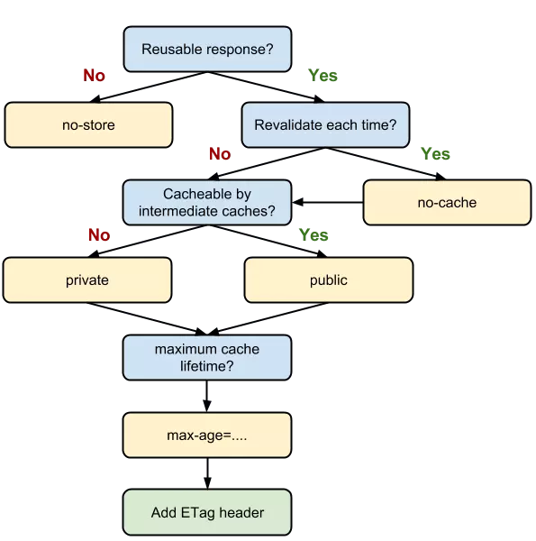

来到五月底，19年春招（暑期实习）已经基本接近尾声。对我个人来说，虽然结果不能说有多好，但至少在面试的过程中，通过与面试官的不断交流，我对前端的认知有了更深的了解，对今后的学习路线也有了大体的规划。在这里简单总结一些面试中遇到的印象比较深（坑）或者当时答得不太好的问题，为秋招留作参考。
1. 闭包
概念：
闭包就是有权访问另一个函数作用域中变量的函数
示例代码：
function foo() { |
在上例中，首先有执行上下文foo，在foo中定义了函数bar，通过对外返回bar的方式，让bar得以执行。
当bar执行时，访问了foo内部的变量a, b。此时闭包就会产生
原理：
首先需要了解JavaScript引擎的垃圾回收机制。垃圾回收机制有一个重要的行为：当一个值在内存中失去引用时，垃圾回收机制会根据特殊的算法找到它，并将其回收，释放内存。函数的执行上下文，在执行完毕之后，生命周期结束，那么该函数的执行上下文就会失去引用。其占用的内存空间很快就会被垃圾回收器释放。
而上例中，foo()执行完毕后，bar扔保持着对其内部变量的引用，从而使foo未被回收。所以此时仍能访问到变量a, b的值。
应用场景：
- 模块化
私有化便令，且可防止污染全局作用域
(function () { |
- 柯里化（比较难理解，在这里就不详细展开了）
概念：
柯里化是指这样一个函数(假设叫做createCurry)，他接收函数A作为参数，运行后能够返回一个新的函数。并且这个新的函数能够处理函数A的剩余参数。
简单实现：
function createCurry(func, args) { |
2.MVVM与MVC
- MVVM核心：
【视图模型】mvvm模式的核心，它是连接view和model的桥梁。
它有两个方向：一是将【模型】转化成【视图】，即将后端传递的数据转化成所看到的页面。实现的方式是：数据绑定。二是将【视图】转化成【模型】，即将所看到的页面转化成后端的数据。实现的方式是：DOM 事件监听。这两个方向都实现的，我们称之为数据的双向绑定。
总结：在MVVM的框架下视图和模型是不能直接通信的。它们通过ViewModel来通信，ViewModel通常要实现一个observer观察者，当数据发生变化，ViewModel能够监听到数据的这种变化，然后通知到对应的视图做自动更新，而当用户操作视图，ViewModel也能监听到视图的变化，然后通知数据做改动，这实际上就实现了数据的双向绑定。并且MVVM中的View 和 ViewModel可以互相通信。
3.HTTP1.0/HTTP1.1/HTTP2
- 支持方法变动
HTTP1.1新增OPTIONS, TRACE, CONNECT，废弃LINK, UNLINK
- 持久化连接
HTTP1.1中所有的连接默认都是持久连接
- HTTP2 特性
- 多路复用（复用同一个TCP连接）
- 以二进制传输数据
- Header压缩
- 服务端push
- HTTP1.1的升级
- 100（Continue）状态码
- 增加Host字段（用于虚拟主机）
4.实现一个服务器
（1） 接受客户端连接
- 接受客户端发送的TCP连接，将IP地址解析出来
- 连接建立后，将新连接添加到现存的Web服务器连接列表
- 识别客户端主机（此处可通过“反向DNS”对大部分Web服务器进行配置）
（2） 接受请求报文
解析请求行
监控请求
- 单线程
- 多进程及多线程
- 复用I/O
- 复用多线程
处理请求
对资源的映射及访问
构建响应
- 相应实体
- MIME类型
- 重定向
发送响应
记录日志
5.Vue组件间通信
- 父子通信
父组件通过
props传递数据给子组件，子组件通过emit发送事件传递数据给父组件通过
$parent和$children直接访问父、子实例$listeners和.sync(>=Vue@2.3),$listeners属性会将父组件中(不含 .native 修饰器的) v-on 事件监听器传递给子组件，子组件可以通过访问 $listeners 来自定义监听器。.sync用法：<!--父组件中-->
<input :value.sync="value" />
<!--以上写法等同于-->
<input :value="value" @update:value="v => value = v"></comp>
<!--子组件中-->
<script>
this.$emit('update:value', 1)
</script>
- 兄弟组件
通过this.$parent.$children，然后根据组件的name查询到需要的实例
- 跨多层级
对于这种情况可以使用 Vue 2.2 新增的 API provide / inject，虽然文档中不推荐直接使用在业务中，但是如果用得好的话还是很有用的。
// 父组件 A |
- 任意组件
这种方式可以通过 Vuex 或者 Event Bus 解决，另外如果你不怕麻烦的话，可以使用这种方式解决上述所有的通信情况
6.缓存相关
- 强缓存（强缓存表示在缓存期间不需要请求，state code 为 200）
Expires（HTTP/1）
需注意，如果修改了本地时间，可能会造成缓存失效
Cache-Control(HTTP/1.1)
优先级高于Expires，但当HTTP版本为1.0时，会忽略Cache-Control

- 协商缓存（如果缓存过期了，就需要发起请求验证资源是否有更新）
协商缓存可以通过设置两种 HTTP Header 实现：Last-Modified 和 ETag 。
当浏览器发起请求验证资源时，如果资源没有做改变，那么服务端就会返回 304 状态码，并且更新浏览器缓存有效期。

Last-Modified 和 If-Modified-Since
Last-Modified表示本地文件最后修改日期，If-Modified-Since会将Last-Modified的值发送给服务器，询问服务器在该日期后资源是否有更新，有更新的话就会将新的资源发送回来，否则返回 304 状态码。但是
Last-Modified存在一些弊端：- 如果本地打开缓存文件，即使没有对文件进行修改，但还是会造成
Last-Modified被修改，服务端不能命中缓存导致发送相同的资源 - 因为
Last-Modified只能以秒计时，如果在不可感知的时间内(1s内)修改完成文件，那么服务端会认为资源还是命中了，不会返回正确的资源
- 如果本地打开缓存文件，即使没有对文件进行修改，但还是会造成
ETag 和 If-None-Match
ETag类似于文件指纹，If-None-Match会将当前ETag发送给服务器，询问该资源ETag是否变动，有变动的话就将新的资源发送回来。并且ETag优先级比Last-Modified高。
- 浏览器默认策略
对于这种情况，浏览器会采用一个启发式的算法，通常会取响应头中的 Date 减去 Last-Modified 值的 10% 作为缓存时间。
7.DNS解析过程
- 系统会检查本地缓存（浏览器，hosts等）是否存在域名映射
- 如果本地DNS缓存没有命中，则查找本地DNS服务器
- 本地DNS服务器会把请求发至根DNS服务器，根DNS服务器收到请求后会返回一个负责该顶级域名服务器的IP。本地DNS服务器收到IP后，将会请求这个IP对应的服务器，就这样逐层查找，直至找到主机。
8.跨域（通过代理方式）
代理服务器解决跨域的思路是利用代理服务器对浏览器页面的请求进行转发，因为同源策略的限制只存在在浏览器中，到了服务器端就没有这个限制了，常用的代理服务器方案有使用反向代理服务器以及服务器内转发，使用反向代理服务器的例子是Nginx的反向代理，通过修改Nginx的配置文件，将指定的不同源域名代理到当前服务器上，浏览器就可以正常访问不同源的资源了。还有个方案是不依赖反向代理服务器，在server端对不同源的API进行转发。
- 转发不同源请求
首先代理服务器需要知道浏览器页面需要请求的API，因此，页面需要把API当做参数传递给代理服务器，形如：/proxy/:api，api参数是完整的API链接，如之前提到的豆瓣公共API：https://api.douban.com/v2/book/1220562 。server端对API进行转发，在Python中可以使用requests发起HTTP请求，nodejs可以使用request，server端获得响应后将响应的结果返回给浏览器，具体的实现也很简单，以Flask为例：
|
在浏览器端发起请求的具体代码为：
self.$http.get('/proxy/https://api.douban.com/v2/book/1220562').then(function(res) { |
- 反向代理
如www.a.com跨域访问www.b.com/login接口，可将网页中的目标网址改为www.a.com/apis/login
通过nginx配置，示例：
server { |
9.CSRF相关
CSRF（Cross Site Request Forgery），中文是跨站点请求伪造。CSRF攻击者在用户已经登录目标网站之后，诱使用户访问一个攻击页面，利用目标网站对用户的信任，以用户身份在攻击页面对目标网站发起伪造用户操作的请求，达到攻击目的。
- 示例攻击过程
假如博客园有个加关注的GET接口，blogUserGuid参数很明显是关注人Id，如下：
那我只需要在我的一篇博文内容里面写一个img标签：
那么只要有人打开我这篇博文，那就会自动关注我。
- 防御措施
1. 尽量使用POST，限制GET
GET接口太容易被拿来做CSRF攻击，看第示例就知道，只要构造一个img标签，而img标签又是不能过滤的数据。接口最好限制为POST使用，GET则无效，降低攻击风险。
当然POST并不是万无一失，攻击者只要构造一个form就可以，但需要在第三方页面做，这样就增加暴露的可能性。
2. 浏览器Cookie策略
IE6、7、8、Safari会默认拦截第三方本地Cookie（Third-party Cookie）的发送。但是Firefox2、3、Opera、Chrome、Android等不会拦截，所以通过浏览器Cookie策略来防御CSRF攻击不靠谱，只能说是降低了风险。
PS：Cookie分为两种，Session Cookie（在浏览器关闭后，就会失效，保存到内存里），Third-party Cookie（即只有到了Exprie时间后才会失效的Cookie，这种Cookie会保存到本地）。
PS：另外如果网站返回HTTP头包含P3P Header，那么将允许浏览器发送第三方Cookie。
3. 加验证码
验证码，强制用户必须与应用进行交互，才能完成最终请求。在通常情况下，验证码能很好遏制CSRF攻击。但是出于用户体验考虑，网站不能给所有的操作都加上验证码。因此验证码只能作为一种辅助手段，不能作为主要解决方案。
4. Referer Check
Referer Check在Web最常见的应用就是“防止图片盗链”。同理，Referer Check也可以被用于检查请求是否来自合法的“源”（Referer值是否是指定页面，或者网站的域），如果都不是，那么就极可能是CSRF攻击。
但是因为服务器并不是什么时候都能取到Referer，所以也无法作为CSRF防御的主要手段。但是用Referer Check来监控CSRF攻击的发生，倒是一种可行的方法。
5. Anti CSRF Token
现在业界对CSRF的防御，一致的做法是使用一个Token（Anti CSRF Token）。
例子：
用户访问某个表单页面。
服务端生成一个Token，放在用户的Session中，或者浏览器的Cookie中。
在页面表单附带上Token参数。
用户提交请求后， 服务端验证表单中的Token是否与用户Session（或Cookies）中的Token一致，一致为合法请求，不是则非法请求。
这个Token的值必须是随机的，不可预测的。由于Token的存在，攻击者无法再构造一个带有合法Token的请求实施CSRF攻击。另外使用Token时应注意Token的保密性，尽量把敏感操作由GET改为POST，以form或AJAX形式提交，避免Token泄露。
注意：
CSRF的Token仅仅用于对抗CSRF攻击。当网站同时存在XSS漏洞时候，那这个方案也是空谈。所以XSS带来的问题，应该使用XSS的防御方案予以解决。
10.WebRTC建立连接的过程
（不是很好理解，暂时搁置。。）
11.WebSocket怎么实现的（安全）
为了实现 WebSocket 通信，在 HTTP 连接建立之后，需要完成一次“握手”（Handshaking）的步骤。
握手·请求
为了实现 WebSocket 通信，需要用到 HTTP 的 Upgrade 首部字段，告知服务器通信协议发生改变，以达到握手的目的。GET /chat
Host: server.example.com
Upgrade: websocket
Connection: Upgrade
Sec-WebSocket-Key: dGhlIHNhbXBsZSBub25jZQ==
Origin: http://example.com
Sec-WebSocket-Protocol: chat, superchat
Sec-WebSocket-Version: 13Sec-WebSocket-Key字段内记录着握手过程中必不可少的键值。Sec-WebSocket-Protocol字段内记录使用的子协议。
子协议按 WebSocket 协议标准在连接分开使用时，定义那些连接的名称。握手·响应
对于之前的请求，返回状态码 101 Switching Protocols 的响应。101 Switching Protocols
Upgrade: websocket
Connection: Upgrade
Sec-WebSocket-Accept: s3pPLMBiTxaQ9kYGzzhZRbK+xOo=
Sec-WebSocket-Protocol: chatSec-WebSocket-Accept的字段值是由握手请求中的Sec-WebSocket-Key的字段值生成的。
成功握手确立 WebSocket 连接之后，通信时不再使用 HTTP 的数据帧，而采用 WebSocket 独立的数据帧。
12.HTTPS如何校验证书合法性
客户端在对服务器say hello之后，服务器将公开密钥证书发送给客户端，注意这个证书里面包含了公钥+各种信息+签名（签发机构持有私钥，并使用私钥对各种信息加密后生成签名），客户端收到公开密钥证书后，相当于收到了一个包裹里面有公钥+各种信息+签名。那么如何使用这三个数据来校验呢？很简单，公钥加密，私钥解，私钥加密公钥也可以解，只要利用公钥对签名进行解密，然后最和各种信息做比较就可以校验出证书的合法性。
P.S 客户端须持有服务端的公钥才可防御中间人攻击。
参考文献
《HTTP权威指南》
《图解HTTP》